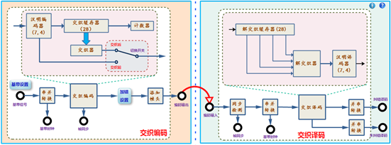
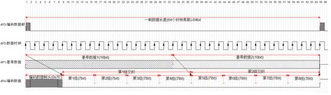

四、实验框图及功能说明
4.1 实验框图说明

图1.1.1.1 汉明交织编译码原理实验框图框图说明：
本实验中需要用到以下2个功能模块：
(1).A4（信道编码与频带调制模块）：
模块完成汉明码编码及交织的功能。为便于观察实验结果，对编码原理进行验证，在本节原理实验中，不需要外接基带数据（系统实验时需外接数据），而是直接内部产生16bit的基带数据，对该基带数据进行汉明编码，编码后进行交织，其中编码和交织数据可通过开关切换输出。
16bit基带数据按照（7,4）汉明码编码时，需分为4组分别进行编码，编码后为28bit数据，再对28bit数据进行交织，交织后可以直接输出，或者进行加错设置后输出。
(2).A5（频带解调与纠错译码模块）：
模块完成同步-解交织-汉明码译码功能。将编码数据输入到模块译码输入端，可以完成帧同步，解交织，汉明译码的纠错输出和未纠错输出。通过两组数据比较可以完成交织编码纠错能力的验证。
4.2 框图中各个测量点说明
(1).信道编码与频带调制
l 4P1：基带数据输出；
l 4P2：基带时钟输出；速率可选32k或256k；
l 4P3：编码数据帧同步输出；
l 4P4：汉明编码+交织输出（编码后加帧头，加错输出）；
下图中对各个测量点时序关系进行说明：

图3.2.4.2 汉明交织编译码个测量点时序图
图中标注了一帧长度，为64个编码时钟周期。
4P3为编码数据帧，每隔64个时钟周期输出一个帧脉冲，帧脉冲的上升沿为一帧的起始时刻。
4P1为编码前基带数据（16Bit），4P2为基带数据时钟，由于编码后数据增加，对应数据速率变快，在实验中，编码时钟为基带数据时钟的2倍，因此64个编码时钟周期包含32bit基带数据，即两组16bit基带数据。编码时2组16bit分为4*4bit进行（7,4）汉明编码，每组编码后为4*7bit=28bit数据。
编码后，对两组28bit的基带数据进行交织。为了便于同步，将两组交织后数据进行组帧，在最前面加上8bit帧头（帧头为0x7E），组成一帧完整的编码数据。从图中可以看出，一帧编码数据包含：8bit帧头+2组交织数据，即8bit+2*28bit=64bit数据。
在进行加错设置时，分为了4*7bit=28bit进行加错，分别对应每组交织的28bit数据进行加错。
(2).频带解调与纠错译码
l 5P7：交织译码输入孔；
l 5P8：交织译码纠错输出；
l 5P9：交织译码未纠错输出；
五、实验内容及步骤
5.1实验准备
(1).模块在位检查
在关闭系统电源的情况下，确认下列模块在位：
● 信道编码与频带调制模块-A4；
● 频带解调与纠错译码模块-A5；
(2).加电
打开系统电源开关，通过液晶显示和模块运行指示灯状态，观察实验箱加电是否正常。若加电状态不正常，请立即关闭电源，查找异常原因。
(3).选择实验内容
在液晶上根据功能菜单选择：实验项目->原理实验->信道编译码实验-交织编译码验证，进入到交织编译码原理实验功能页面。
(4).信号线连接：
使用信号连接线按照实验框图中的连线方式进行连接,并理解每个连线的含义。
5.2交织码编码原理验证
(1).基带数据设置及观测
使用双踪示波器分别观察4P1和4P2。使用鼠标点击“基带设置”按钮，弹出16bit拨码开关，修改数据速率及拨码开关，点击“设置”进行修改，观察示波器观测波形的变化，理解并掌握基带数据设置的基本方法。
(2).系统组帧原理观测
使用双踪示波器分别观测4P3和4P4，其中4P3作为同步通道。将基带数据设置为全“0”码，观察一组完整的组帧数据，分析全“0”码时，编码数据输出的内容。
(3).交织前编码数据观测
示波器保持步骤（2）观测点。将“切换开关”切换到交织前输出，修改基带数据的设置，观察编码数据输出，结合实验原理部分对帧结构的说明，分别记录基带数据和编码数据。多修改几组基带数据，记录对应的编码数据，验证编码是否正确。
(4).交织后数据观测
示波器保持步骤（2）观测点。将“切换开关”切换到交织后输出，修改基带数据的设置，观测交织后数据，结合实验原理部分对帧结构的说明，分别记录交织前和交织后数据。多修改几组基带数据，记录对应的编码数据，交织数据，验证编码和交织是否正确。
(5).加错数据观测
通过实验框图上的“加错设置”按钮，可以对编码输出加错，16bit分4组编码后为4*7bit，每bit均能加错。修改加错4组拨码开关的加错数据，通过示波器观测加错前及加错后的交织数据，并分析加错位置。
注：4组拨码开关，分别对两组28bit的交织数据进行加错。
5.3 交织译码观测及纠错能力验证
(1).交织码译码观测
使用双踪示波器分别观察4P1和5P8，观测原始基带数据和解交织后纠错译码数据。将加错设置全部清零，通过“基带设置”修改基带数据，观察4P1和5P8是否相同？是否有时延？如有时延，记录时延周期。
(2).交织码译码及纠错能力验证
通过实验框图上的“加错设置”按钮，设置加错数据，观测基带数据和译码数据是否相同？加错时可以修改不同的加错图样。如：每组编码加1bit错误，加2bit错误…，加入连续错误，加入分散错误等各种不同的情况，以便对汉明译码能力进行验证。分析：实验中的交织编译码最多可以纠正几个连续的突发错误？相比汉明码，交织的纠错能力（一组数据中最达纠正错误数）有提升吗？
(3).交织译码未纠错译码验证
使用双踪示波器分别观察4P1和5P9，观测交织前数据和未纠错译码后数据，完成上面步骤的的测量，分析加错个数和加错位置对译码数据的影响。
5.4实验结束
实验结束，关闭电源，拆除信号连线，并按要求放置好实验附件和实验模块。